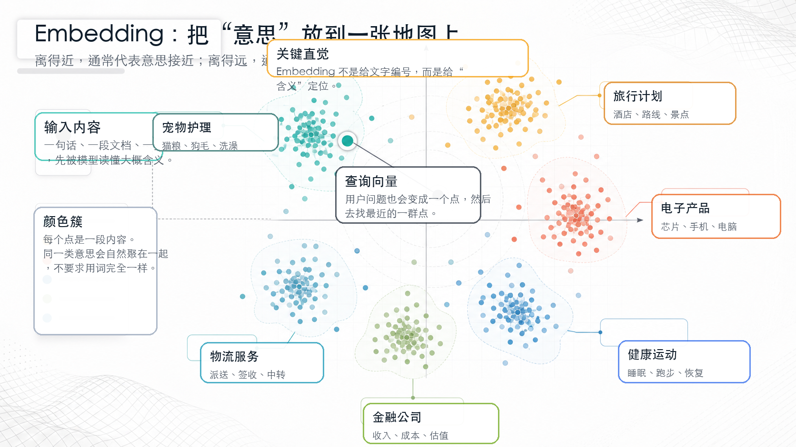
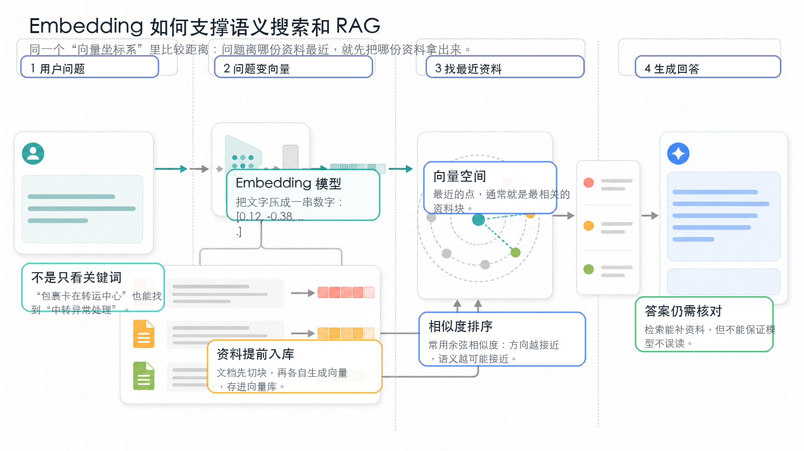

Embedding
向量表示
为什么 AI 能听懂“意思相近”，而不只是“字面相同”？
把“语义”变成可计算距离，让机器不再只看关键词。
RAG、AI搜索、向量数据库、推荐系统、多模态检索。
相似不等于真实，召回正确只是回答正确的第一步。
为什么这个概念重要？
Embedding 解决的是一个非常根本的问题：计算机原本只擅长比较“符号是否一样”，却不擅长比较“意思是否相近”。
如果你在搜索框里输入“电脑发烫怎么办”，传统关键词系统更容易找含有“电脑”“发烫”的文章；但你真正想找的，也许是“笔记本散热异常”“CPU温度过高”“风扇清灰”。这些词不完全一样，但意思在同一片区域。Embedding 的价值，就是把这种“意思相近”变成可以计算的距离。
它改变了很多 AI 产品的底层逻辑：从“找到完全匹配的字”，升级为“找到真正相关的意思”。这也是为什么你问 AI 一个很生活化的问题，它可以从文档库里找出并不含原句、但确实相关的资料。
一个直观类比：会摆书的图书管理员
想象一所巨大的图书馆。老管理员只会按书名里的字摆书：书名有“猫”的放一排，有“狗”的放一排，有“宠物”的又放另一排。结果是：一本《新手铲屎官指南》和一本《狗狗洗澡手册》明明都在讲宠物照护，却被分得很远。
Embedding 像一位更聪明的管理员。它读完每本书后，不只看标题，而是判断这本书在讲什么，然后把它放到“意思地图”上的一个位置。讲宠物照护的书靠近，讲芯片制造的书靠近，讲旅行计划的书靠近。
当你问“猫掉毛严重怎么办”，管理员不会只找包含这几个字的书，而是先把你的问题也放到地图上，再拿出离它最近的一堆资料。你看到的结果，就更像“懂你在问什么”。

工作原理：从文字到可计算的坐标
可以是一句话、一段文档、一张图片，甚至一段音频。系统先把它交给 embedding 模型。
模型输出一串数字，比如 [0.12, -0.38, ...]。单个数字通常没有直观含义，整串数字才代表位置。
两个向量方向越接近，系统越认为它们语义相近。常见做法是计算余弦相似度。
找到最相近的资料、商品、图片或用户兴趣，再交给搜索、推荐或大模型继续处理。
训练 embedding 的直觉并不神秘。模型看过大量语料后，会发现“猫”“狗”经常出现在“宠物、喂养、毛发、洗澡”附近；“芯片”“GPU”“算力”经常出现在另一组上下文附近。久而久之，模型学会把经常共享语境的内容放近一些。
这也是为什么现代 embedding 不只是“单词表”。同一个词在不同句子里可能有不同含义：“银行提高利率”和“河流冲刷银行”在中文里不常见，但英文 bank 就有金融机构和河岸两种意思。更强的模型会结合上下文，尽量给出更贴近当前语境的向量。

关键术语解释
| 术语 | 专业解释 | 白话解释 |
|---|---|---|
| Embedding | 把文本、图像等对象映射到连续向量空间的表示方法。 | 给内容做一个“意义坐标”。 |
| Vector 向量 | 由多个数字组成的数组，用来表示对象在空间中的位置。 | 像 GPS 坐标，只是维度更多。 |
| Dimension 维度 | 向量里的数字数量，例如 256、1024、3072 维。 | 描述位置用多少个“刻度”。更多不一定永远更好。 |
| Semantic Similarity | 两个对象在语义上的接近程度。 | 说法不同，但意思是不是很像。 |
| Cosine Similarity | 用两个向量夹角衡量相似度的常见方法。 | 看两个箭头是不是指向差不多的方向。 |
| Vector Database | 专门存储和检索大量向量的数据库。 | 一座按“意思距离”找资料的图书馆。 |
| Chunk | 把长文档切成较短、可独立检索的片段。 | 把整本书拆成可查询的小卡片。 |
真实应用案例：企业知识库客服
假设一家物流企业有几千份内部知识文档：派送规则、异常件处理、理赔流程、网点操作手册。用户问：“我的包裹卡在中转场两天了，该怎么办？”
知识库里真正有用的文档标题可能叫《中转异常滞留处理规范》，里面未必出现“卡住”这个词。传统关键词搜索可能漏掉它；embedding 搜索会发现“卡在中转场”和“中转异常滞留”在意思地图上很近，于是把这份规范召回。
接下来，大模型拿着召回资料生成回答：先解释可能原因，再给用户下一步操作，再提醒哪些情况需要人工介入。这里 embedding 负责“把资料找对”，大模型负责“把话说清楚”。两者配合，才是很多 RAG 系统的基本形态。
常见误区
不是。它是高效的统计表示，能捕捉很多语义关系，但不等于人类理解、常识判断或事实核验。
距离近只代表“可能相关”。相似资料也可能过时、片面或错误，所以 RAG 仍需要来源、权限、时间和质量控制。
向量库擅长相似检索，不擅长自动保证因果、计算、权限和最新事实。它不是大模型的无限大脑。
高维可能更细腻，也可能更贵、更慢、更占空间。工程上通常要在效果、成本和速度之间取平衡。
很多生产系统会混合使用：关键词适合精确匹配编号、人名、订单号；向量适合语义相近但字面不同的问题。
3句话总结
- Embedding 的本质，是把复杂内容变成一串数字坐标，让机器能计算“意思相近”。
- 它让 AI 搜索、RAG、推荐、聚类、多模态检索从“字面匹配”升级到“语义匹配”。
- 但相似不等于真实，embedding 解决的是“找相关资料”，不是自动保证答案正确。
复习问题
1. 如果用户问“笔记本太烫怎么办”，为什么 embedding 可能找到“CPU温度过高处理指南”，即使标题没有“太烫”两个字？
2. 在企业 RAG 系统里，embedding 和大模型分别承担什么角色？如果资料召回错了，会发生什么？
3. 为什么订单号、身份证号、精确产品型号这类信息，通常不能只靠向量相似度来检索？